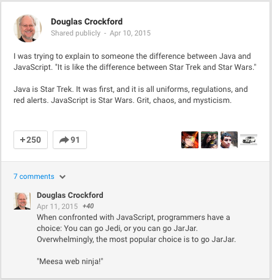

History
- Early 90s: Marc Andreessen, founder of Netscape Communications and part of the ex-Mosaic team, had the vision that the web needed a way to become more dynamic. Animations, interaction and other forms of small automation should be part of the web of the future. So the web needed a small scripting language that could interact with the DOM
- Created by Brendan Eich in 1995 during his time at Netscape Communications. It was developed in 6 months!
- Why 'Java'script? Does it have anything to do with Java? Code name was 'Mocha', Netscape internally called it LiveScript, publically Javascript won. Java is only in the name as a marketing ploy to get Java developers interested in it when it was first released.
- It was a marriage of Java-like syntax, with elements from the Scheme and Self languages.
-
Douglas Crockford (well known author and speaker on Javascript)
described the difference between Java and Javascript once like
this:
 - The official name of the language is ECMAScript
Versioning and new Features
In 1996 The ECMA group (ECMA is an industry association formed in 1961 concerned solely with standardization of information and communications systems) started working on a standardization of Javascript. Because of copyright issues they couldn't use "Java" so the language was renamed to ECMAScript.
Versioning has caused some confusion: Javascript versions
One of the decisions made early on with JS was that it would maintain backwards compatibility. This means no new changes will ever break old code. This has lead to many challenges to fix problems in the language. It does not promise forward compatibility however...that future code will work everywhere. This adds additional challenges.
Javascript is unique in the fact that the developer has no control over the environment where there code will run in most cases. The end user chooses the browser they will view the app in, and that browser may or may not have implemented all of the features in a version of JS yet. So the developer wants to use the very helpful an powerful new feature in the language...but doing so will cause their code to break for many people.
This dilemma has lead to the rise of several tools that are often used in Javascript development: caniuse, transpilers, and polyfills.
JS and the Web
The purpose of Javascript from the beginning was to allow for dynamic web pages, and so it should come as no surprise that most Javascript is run in a browser. It is surprising how much of what we consider as part of Javascript is really web browser APIS to allow JS to interact with the browser better however. We will talk more about this later.
While most JS is used in front-end development (code that runs in a browser), there is an increasing push to use it for back-end development (code that runs on a server) as well. That desire resulted in the NodeJS project which has become very popular.